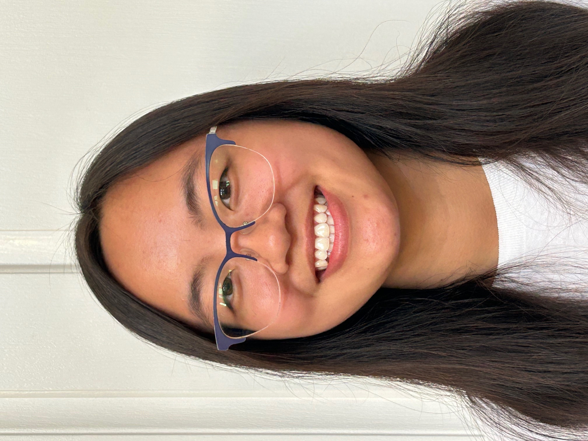
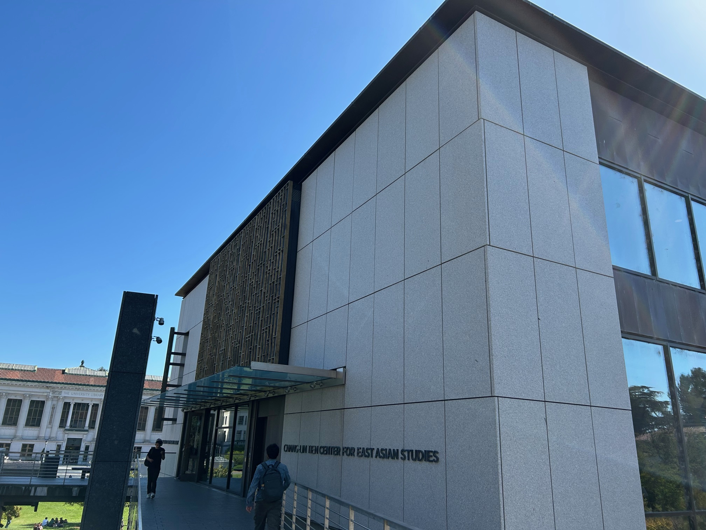
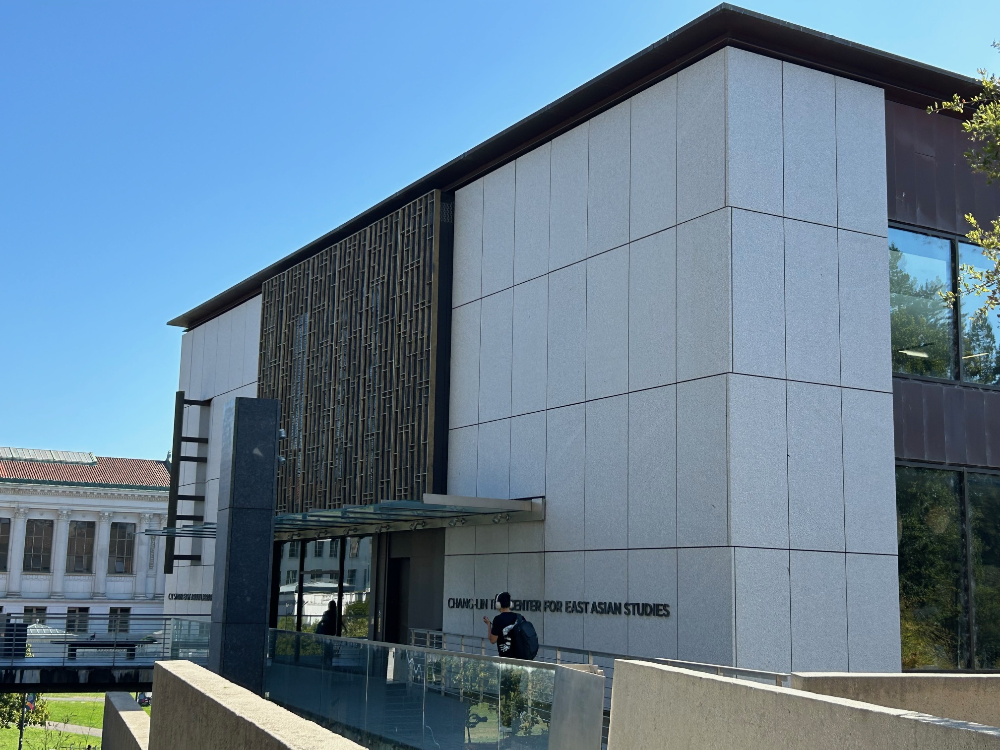

Project 0: Becoming Friends with Your Camera
Part 1: Selfie: The Wrong Way vs. The Right Way
wrong vs right

Part 2: Architectural Perspective Compression
Let's repeat the same procedure in reverse...


Part 3: The Dolly Zoom
In this part, we will be duplicating a classic film effect...